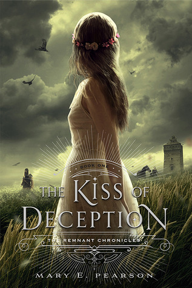
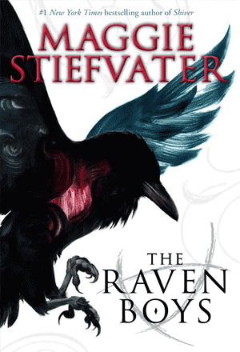
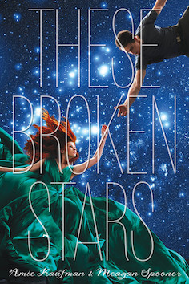

In the future, the world is at war.
For the last decade, King Lazuli of the Eastern Empire has systematically taken over the world. No one knows much about him other than a series of impossible facts: he cannot die, he has not aged since the conflict began, and he wants to rule the world.
All Serenity Freeman has known is bloodshed. War has taken away her mother, her home, her safety. As the future emissary of the Western United Nations, the last autonomous region of the globe, she is responsible for forging alliances where she can.
Surrender is on the horizon. The king can taste it; Serenity feels it deep within her bones. There is no other option. Now the two must come face to face.

She is pursued by bounty hunters sent by her own father.
Fed up and ready for a new life, Lia flees to a distant village on the morning of her wedding. She settles in among the common folk, intrigued when two mysterious and handsome strangers arrive-and unaware that one is the jilted prince and the other an assassin sent to kill her. Deceptions swirl and Lia finds herself on the brink of unlocking perilous secrets—secrets that may unravel her world-even as she feels herself falling in love.

Every year, Blue Sargent stands next to her clairvoyant mother as the soon-to-be dead walk past. Blue herself never sees them-not until this year, when a boy emerges from the dark and speaks directly to her. His name is Gansey, and Blue soon discovers that he is a rich student at Aglionby, the local private school.
For as long as she can remember, Blue has been told by her psychic family that she will kill her true love. She never thought this would be a problem. But now, as her life becomes caught up in the strange and sinister world of the Raven Boys, she's not so sure anymore.

Luxury spaceliner Icarus suddenly plummets from hyperspace into the nearest planet. Lilac LaRoux and Tarver Merendsen survive – alone. Lilac is the daughter of the richest man in the universe. Tarver comes from nothing, a cynical war hero. Both journey across the eerie deserted terrain for help. Everything changes when they uncover the truth.